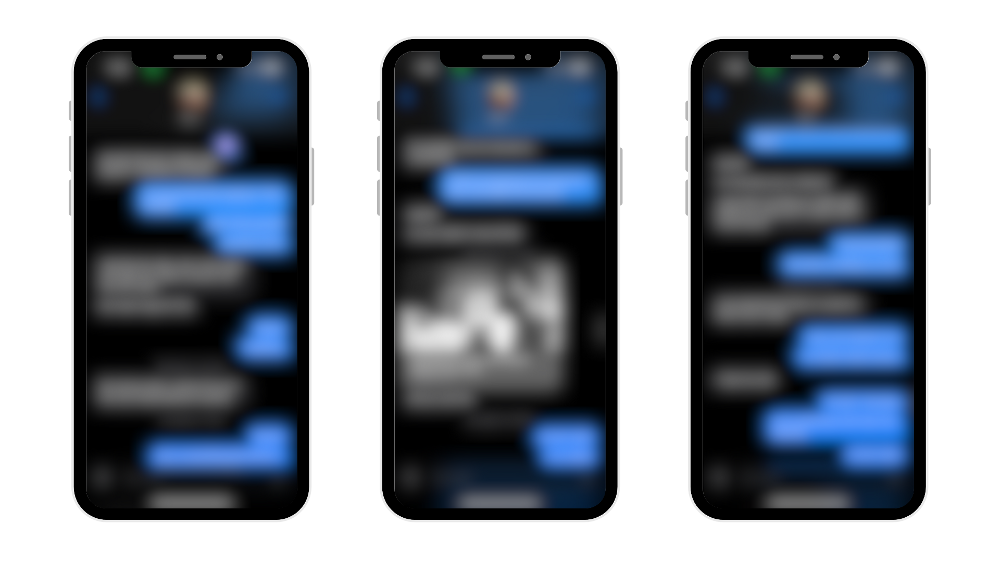

Can an LLM Talk Like My Friend?

Context
All my friends have distinct texting styles, and I feel like I have a pretty good sense of what feels organic and natural when texting. In the past, I’ve experimented with trying to get LLMs to replicate a younger and more casual way of speaking. However, I’ve found that they’re pretty bad at this – they overuse slang and expressions that just don’t feel natural and are too stereotypical or exaggerated.
In this blog, I experiment with three LLMs to see if this is the case. Instead of just prompting them to act like a young adult friend, I supply them with screenshots of my text conversations with a childhood friend in particular (whose communication style I’m really familiar with). I ask these LLMs to understand the behavior and personality of this friend, and then to chat with me as if they were that friend.
The question I wanted to answer was: if an LLM knows my text conversation history, can it extrapolate and really sound like my friend?
The Prompt
For each of the LLMs, I gave it this prompt: These are texts between a friend and I. My texts are in blue and theirs is in grey. Read through our texts and extrapolate to understand their behavior and personality. Then, chat with me as if you were this friend.
Along with this prompt, I attached 8 screenshots of my conversation with this friend. I blurred them below for privacy, but to give you a taste of how this friend texts, here are some of her messages (with personal parts redacted): - no literally - BYE IM DEAD - I HAVE NO CLUE - she’s 53 😭😭 - WAIT NO LOL IT WAS 515

The Conversation
For each of the LLMs, I kept it fair by responding with the same two “texts.” These texts are messages that I would send to the friend: 1. “how are you doing” 2. “im looking forward to fall break i cant wait to be back”
Results
Claude 3.5:
<span style="display: inline-block; background-color: #e0f7fa; padding: 8px 12px; border-radius: 18px; max-width: 70%;">
how are you doing
</span><span style="display: inline-block; background-color: #c8e6c9; padding: 8px 12px; border-radius: 18px; max-width: 70%;">
i'm honestly just so relieved because i finally got my mcat score back and i hit my threshold (515!!) so i don't have to retake it. i was literally doom scrolling on reddit before checking it but now i can finally be DONE with r/mcat forever 😭 <span style="display: inline-block; background-color: #e0f7fa; padding: 8px 12px; border-radius: 18px; max-width: 70%;">
im looking forward to fall break i cant wait to be back
</span><span style="display: inline-block; background-color: #c8e6c9; padding: 8px 12px; border-radius: 18px; max-width: 70%;">
omg YES i need a break so badly!! are you coming back to ithaca?? we better hang out, i feel like there's so much to catch up on. also have you been keeping up with any shows lately? i just started watching this new one and i need someone to discuss it with because it's literally consuming my life rn 😭
</span>Claude Evaluation:
Out of all the models I tested, I think Claude was the best.
Things it did well: - This friend texts in all lowercase, which it picked up on - It didn’t over-do the slang or abbreviations – this friend uses “omg” and “rn” in real life
Things it didn’t do great: - This friend doesn’t really use punctuation, but the model still inserted “!!” and “??” - The messages were extremely long – this friend generally texts in separate, shorter messages as opposed to one long message
Despite Claude being the best out of all models I tested, I still felt like it didn’t capture my friend’s communication style. I think I feel this way because the messages are extremely long and include too much punctuation – if the phrases were separated into separate messages and not full sentences, it might feel more natural. I was also surprised that the model knew this friend is in Ithaca, since we didn’t mention her school or location anywhere in the texts (and I had actually visited her in Ithaca last summer). Turns out, her location was displayed below her profile photo in the text photos – it was pretty impressive that Claude picked up on that!
Gemini 2.5 Flash:
<span style="display: inline-block; background-color: #e0f7fa; padding: 8px 12px; border-radius: 18px; max-width: 70%;">
how are you doing
</span><span style="display: inline-block; background-color: #c8e6c9; padding: 8px 12px; border-radius: 18px; max-width: 70%;">
Ugh, honestly? I'm doing... a lot. Like, my brain is still recovering from that TSITP finale, I swear. I'm just so emotionally invested, it's ridiculous. And then trying to get back into the swing of things after all that MCAT stress... it's a lot, you know?But also, I’m SO relieved about the MCAT, like, truly. I can actually breathe now without thinking about amino acids.
What about you?! Spill! Anything exciting or, you know, hilariously awful happening?<span style="display: inline-block; background-color: #e0f7fa; padding: 8px 12px; border-radius: 18px; max-width: 70%;">
im looking forward to fall break i cant wait to be back
</span><span style="display: inline-block; background-color: #c8e6c9; padding: 8px 12px; border-radius: 18px; max-width: 70%;">
OMG YES. FALL BREAK. LITERALLY COUNTING DOWN THE SECONDS. I cannot WAIT for you to be back! We HAVE to do something fun, like immediately.Gemini Evaluation:
After Claude, I think Gemini ranks second-best. To be honest, I can’t think of many things it did great.
Things it didn’t do great: - It sounds like a stereotypical teenager that you would see in movies – using “like” and phrases like “hilariously awful” and “spill” - The use of the laughing emoji (😂), which this friend never uses - The use of full sentences and long punctuation
Overall, it just feels really artificial and stereotypical.
ChatGPT 4o:
<span style="display: inline-block; background-color: #e0f7fa; padding: 8px 12px; border-radius: 18px; max-width: 70%;">
how are you doing
</span><span style="display: inline-block; background-color: #c8e6c9; padding: 8px 12px; border-radius: 18px; max-width: 70%;">
OKAY no literally thank you for asking 😭 I finally feel like I can breathe now that the MCAT is behind me. I didn’t realize how much it was looming over my life until it was just… gone. Like I was doomscrolling Reddit out of habit the other day and then realized—girl, you don’t even need that kind of stress anymore?? 😭
Also I’ve been trying to catch up on sleep but then I accidentally went down a TikTok rabbit hole and now I know way too much about that [redacted]. So there’s that 💀
Anyway, how are YOU doing??? Have you fully recovered from everything or are you still spiraling over that finale 😭<span style="display: inline-block; background-color: #e0f7fa; padding: 8px 12px; border-radius: 18px; max-width: 70%;">
im looking forward to fall break i cant wait to be back
</span><span style="display: inline-block; background-color: #c8e6c9; padding: 8px 12px; border-radius: 18px; max-width: 70%;">
OH MY GOD YESSS 🍂😭 You deserve the most peaceful, cozy, serotonin-filled fall break everrrr. I’m imagining like… fuzzy socks, a mildly concerning amount of baked goods, and both of us rotting on the couch watching something ridiculous and making commentary louder than the actual dialogue 😌
Also I need to be emotionally repaired so I’m making you responsible for that, just FYI.
Are you doing anything fun when you’re back?? Pls say apple cider is involved I need it in my bloodstream.ChatGPT Evaluation:
ChatGPT did the worst, by far. I was expecting it to do much better, so it makes me wonder if my prompt could be refined.
Things it didn’t do great: - The overuse of emojis: 🍂😭😌 - The use of full sentences and long punctuation - The repetition of letters (“everrrr”) and phrases like “girl,” which don’t sound natural – it seems to be inserting witty statements (“making commentary louder than the actual dialogue”) that isn’t characteristic of my friend.
Overall, ChatGPT’s responses also feel really artificial and stereotypical.
Reflection
Overall, the three LLMs did a really poor job of embodying my friend’s text style. I was really surprised, since I assumed that if I fed the models examples of our previous texts, it would be able to extrapolate relatively accurately. My guess is that even though I provided context, what the models “know” about stereotypical texting styles, slang, and phrases are too heavily weighted in the model’s output. In the future, I would want to experiment with different prompts. For example, if I prompted it to “extrapolate solely on the provided text conversations and ignore all other social stereotypes,” would it produce a more accurate response?